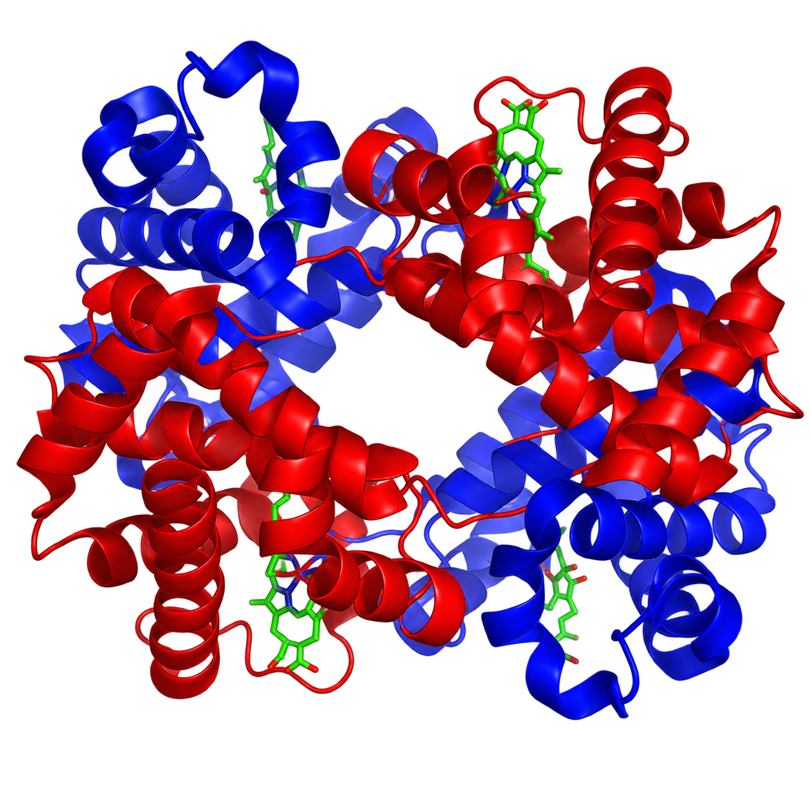
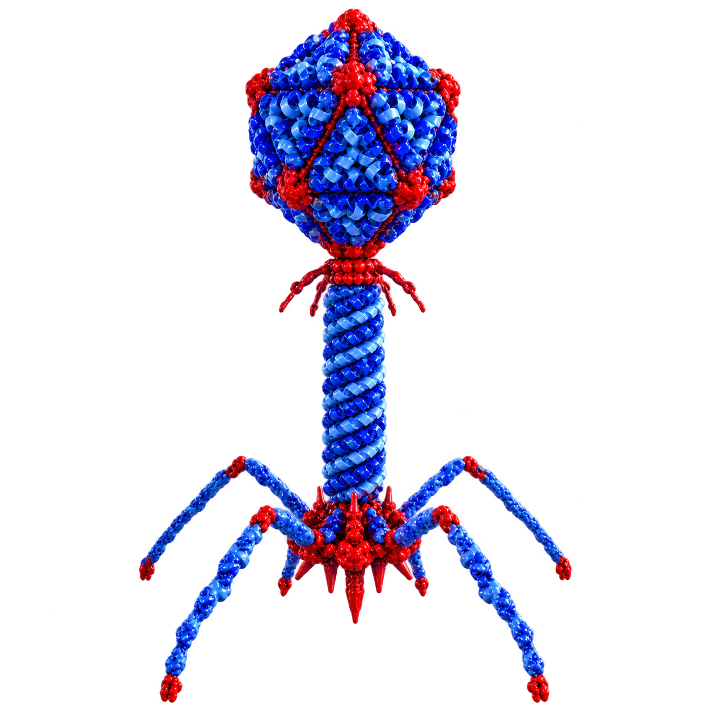

MOVE POINTER · INSPECT
01
DNA / CRISPRSequence · PAM · guide design
RESEARCH PORTFOLIO / 2026
I’m Abdul Basit Behlim, a biotechnology researcher building computational tools for CRISPR design, bioprocess modelling, phage research and data-driven biology.
01 / ABOUT
My work sits where biotechnology meets computation: biological sequence analysis, machine learning, bioprocess data, reproducible research and scientific software.
I am pursuing Industrial Biotechnology at Gujarat Biotechnology University. I’m especially interested in turning complex biological questions into transparent computational workflows that researchers can inspect, validate and improve.
My current work includes CRISPR guide-design software, multi-gene plant targeting, OpenCRISPR-1 sequence workbenches, fermentation soft sensors, phage-host prediction and experimentally grounded endolysin data curation.
I want to build computational biology systems that are scientifically useful, transparent and reproducible.
02 / RESEARCH UNIVERSE
My research interests connect genome engineering, structural biology, bioprocess modelling and phage-focused computational biology.


Single-gene and multi-gene guide design, OpenCRISPR-1 compatibility, sequence provenance and specificity-aware workflows.
Soft sensors, complete-batch validation, fault-inclusive modelling, OOD analysis and future digital-twin approaches.
Phage-host prediction, endolysin annotation, natural Gram-negative endolysin curation, protein embeddings and AMR-focused modelling.
03 / SELECTED PROJECTS
A Python and Streamlit research tool for finding one SpCas9 guide that can target multiple homologous plant genes. It supports exact shared-guide discovery, mismatch-aware consensus design, per-gene target evidence, provenance tracking and explicit PASS / REVIEW / FAIL validation.
A conservative OpenCRISPR-1 guide-design workbench for 20-nt + NGG candidate discovery on both strands, guide-format review, sequence-quality ranking, local specificity screening and reproducible sequence provenance.
An interactive Streamlit workbench for discovering, ranking, reviewing and exporting SpCas9 guide-RNA candidates, with gene lookup, both-strand scanning, CRISPRi support and local-reference specificity screening.
A machine-learning soft sensor for estimating penicillin concentration from simulated fermentation batches, with normal-only versus fault-inclusive modelling, repeated complete-batch validation, uncertainty analysis and out-of-distribution detection.
Structural and computational biology work involving protein visualization and preparation, screening of FDA-approved compounds, molecular docking and molecular-dynamics analysis of promising protein-ligand complexes.
Developing a computational pipeline from phage/viral sequence discovery and annotation to endolysin identification and host prediction using protein-sequence representations and machine learning. In parallel, I am curating experimentally validated natural endolysins active against Gram-negative bacteria.
Exploring workflows that connect physical sensor signals to interpretable ML/AI models and user-facing applications, including soil-parameter sensing and intelligent biosensing concepts.
04 / JOURNEY
Best Student recognition and 2nd Prize in a Bio Model Competition for a nanorobotics concept for early cancer detection.
Qualified GAT-B 2025 with AIR 62 and entered Gujarat Biotechnology University with a national graduate fellowship.
Deepened work across bioinformatics, genomics, fermentation analytics, computational research and machine learning.
Research internship involving protein visualization, FDA-approved drug screening, molecular docking and molecular-dynamics simulation.
Built and deployed CRISPR design tools, advanced an IndPenSim penicillin soft-sensor workflow and expanded into reproducible biological software.
Moving toward phage-host prediction, natural endolysin datasets, protein embeddings, AMR applications and future digital-biology systems.
05 / TOOLKIT
Python · Machine Learning · Data Analysis · Streamlit · Git/GitHub · Model Validation
Sequence Analysis · CRISPR · FASTA · NCBI · Ensembl · Genomics · Phage Biology
ChimeraX · Schrödinger · HADDOCK · Glide · Molecular Docking · MD Simulation
Fermentation · Soft Sensors · Batch Modelling · OOD Analysis · Literature Review · Reproducibility
06 / CONTACT
Open to research conversations, collaborations and projects across biotechnology, bioinformatics and AI/ML.
DNA imagery via Wikimedia Commons. Protein and bacteriophage visuals are local transparent images included with this site.